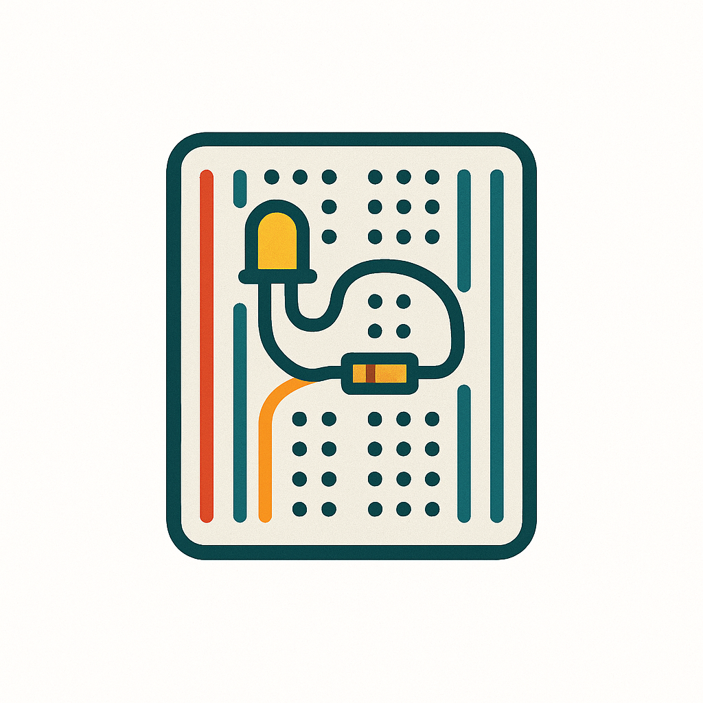
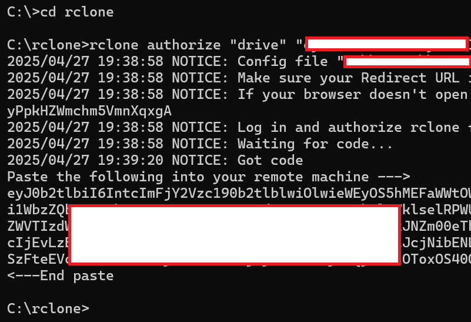

Make a surveillance camera
These are the steps:
- Prepare your laptop.
- Download the Raspberry Pi operating system.
- Install the operating system.
- Attach the camera
- Write the bash code that makes the videos.
- Refine the project.


To see a larger image, click the image.
Prepare your laptop for the Raspberry Pi installation
Before you can use your laptop to run a Raspberry Pi OS installation, make sure that the following software is available on it.
- Download SD Memory Card Formatter. Before you can load an operating system on your microSD card, you must format it. Use the formatter provided by the SD Association because this formatter is platform-agnostic.
- Download Raspberry Pi Imager. The good folks at Raspberry Org have created a wizard that can install an operating system on a microSD card and also, simultaneously, configure the operating system with the barest minimum parameters that are needed to get a Raspberry Pi computer up and running. This wizard is known as Raspberry Pi Imager.
- Download Angry IP Scanner. If you don't plan to use an external mouse, keyboard, and monitor with your Raspberry Pi, you'll need to connect to it through your laptop. To do so, you need the IP address of the Raspberry Pi. A network scanner can show you the IP addresses of all devices that are connected to your network. One such network scanner is Angry IP Scanner, so download it.
- Download PuTTY. If you don't plan to use an external mouse, keyboard, and monitor with your Raspberry Pi, you'll need to connect to it through your laptop. One of the ways to do so is by using a secure shell (SSH) connection. PuTTY is an SSH client through which you can interactively run a command-line session on your Raspberry Pi.
- (Optional) Download WinSCP. If you need to transfer files to and from the Raspberry Pi computer, you need a secure file-transfer client. WinSCP is one such client.
When you're done, you should have the following software on your laptop.

You are now ready to install an operating system on your Raspberry Pi.
Download the operating system
For this step, you need a microSD card and a card reader that can be plugged into your laptop.
The operating system will be downloaded on to the microSD card, which will then be inserted into the microSD slot of the Raspberry Pi board, which will then be plugged into a power socket. That's what will get the little board up and running, and make it ready for the final steps of the project.
- Turn on your laptop. Make sure that it is connected to the internet.
- Plug the microSD card into your laptop, and format it by running SD Card Formatter. Use the Overwrite option to format; this option takes longer but ensures that everything on the SD card is wiped clean and the card formatted.
- On the laptop, run the Raspberry Pi Imager wizard and download Raspberry Pi's operating system to it. All Raspberry Pi computers run on operating systems that are based on the open-source Debian operating system. This project uses Debian Bookworm with the Raspberry Pi Desktop. Begin the download process by selecting the model as Raspberry Pi Zero W and the operating system as Raspberry Pi OS 32-bit (A port of Debian Bookworm with the Raspberry Pi Desktop).
- On the page for OS customisation, click Edit settings. These settings are used for configuring the operating system with your credentials and environment. If prompted for loading Wi-Fi credentials from your host computer, respond in the affirmative. Then, specify the values for at least the following parameters. It's also a good idea to note down these values for easy reference, because you'll need these values later:
- On the General page:
- hostname, which is a name you call your Raspberry Pi by. This is the name that'll be displayed when you search for your Raspberry Pi on the network later.
- username and password, which are the credentials to use when logging in to Raspberry Pi remotely. The user name that you specify here will have administrator privileges to your Raspberry Pi.
- Wireless LAN, which should be prepopulated because you already asked the Wi-Fi credentials to be loaded from the host computer.
- Locale settings, for your time zone, keyboard preferences, and other such locale-related things.
- On the Services page, select the Enable SSH box and the option for password authentication. Later, when the project is up and running, you might choose to isolate your Raspberry Pi from the network, and if you decide to do that, you can turn SSH off, but for the time being, enable it because you might need it for troubleshooting purposes.
- On the Options page, select all the options.
- On the General page:
- Click Save and, when prompted for applying these settings, answer in the affirmative. Click Yes again, and then wait for the operating system to be copied on to the microSD card.
- When the process is complete, take the microSD card out of the laptop port.
Install the operating system
For this project, you install the operating system called Raspberry Pi OS 32-bit (A port of Debian Bookworm with the Raspberry Pi Desktop) for the model called Raspberry Pi Zero W.
- On the Raspberry Pi, locate the microSD card slot (it's midway between the mini-HDMI port and the header pins) and insert the microSD card into the slot.
- Plug in the Raspberry Pi power adapter to a wall socket, and insert the cable into the USB-C power slot of the Raspberry Pi. Turn on the power switch of the wall socket. The light on the Raspberry Pi board should glow green.
- Log in to the Raspberry Pi from your laptop:
- Find the IP address of your nework gateway. To do so, on your laptop, open the command prompt, and type
ipconfig. Then, note down the value that's displayed as Default Gateway. - Start Angry IP Scanner. For the first box in the IP Range field, specify the value of the default gateway that you noted down in the previous step. For the second field, specify a number that's about 15-20 stops away. For example, if your default gateway is
192.168.4.1, specify the end range to be something around192.168.4.15, so that the scan doesn't take too long. (The assumption here is that you don't already have more than 15 devices connected to your network!) Click Start and wait for the scan to be over. Then, in the Hostname column, look for the name of your Raspberry Pi. This is the name that you specified as the hostname in the OS Customisation settings while downloading the operating system on the microSD card. When you've spotted this hostname, look for the entry in the IP column. You need this value in the next step.
- Start PuTTY and enter the IP address of the Raspberry Pi. This is the value that you noted down in the previous step. Click Open. When prompted for login credentials, enter the user name and password that you specified in the OS Customisation settings while downloading the operating system on the microSD card. You should now see a prompt like this:
<hostname>@<username>:~ $. For example, if your hostname isdelphiand user name isoracle, you'll seedelphi@oracle:~ $. It means you're now logged in to your Raspberry Pi and everything's working as expected.
- Find the IP address of your nework gateway. To do so, on your laptop, open the command prompt, and type
- Update the operating system that you installed on the microSD card. You used Raspberry Pi Imager for downloading the operating system but it might not contain the latest patches, fixes, and upgrades. Pull these things in.
- To see if there are any updates to the operating system, run the following command:
sudo apt-get update. The local cache of the Raspberry Pi is updated with the package information for the package repositories. You're shown a list of the these packages, and now it's up to you to upgrade them to their latest versions. - Upgrade the software shown on the list by running the following command:
sudo apt-get upgrade. When prompted for permission to proceed with the upgrade, answer in the affirmative. The actual updates for the installed software and the operating system are now downloaded and installed on your Raspberry Pi.
- To see if there are any updates to the operating system, run the following command:
- Set up Raspberry Pi Connect so that you can control the Raspberry Pi through a browser by using the Raspberry Pi's desktop GUI itself. At the moment, you're already logged into the Raspberry Pi through your laptop via SSH, but you can use only the terminal window when you're so logged in; you can't use the Raspberry Pi's desktop GUI. With the Connect software, you can log into your Raspberry Pi through any browser, and use it through its desktop environment.
- Install Connect by running the following command in the terminal of the Raspberry Pi:
sudo apt install rpi-connect. - Start Connect by running the following command in the terminal of the Raspberry Pi:
rpi-connect on. - Generate a link that will connect your Raspberry Pi computer with your Connect account by running the following command from the terminal:
rpi-connect signin. You're shown a sign-in URL on the terminal. - On your laptop, open a browser, type the URL shown on the Raspberry Pi terminal window, and follow the onscreen prompts to complete the signin and authentication process.
- In the same browser window, specify a name to identify your device, and click Create device and sign in.
- Install Connect by running the following command in the terminal of the Raspberry Pi:
- Shut down the Raspberry Pi by typing the following command on the terminal:
sudo shutdown -h now. You should be disconnected from Raspberry Pi and the terminal window should disappear. Wait till the green light on the Raspberry Pi board stops flashing, and then switch off the power supply.
Now that your Raspberry Pi is ready to be used as a computer, you can proceed to attaching the camera module to it.
Attach Camera Module 3 to Raspberry Pi Zero W
The 12-megapixel Camera Module 3 is the latest official camera module.

To see a larger image, click the image.
When you buy the camera module, you get two connector cables:
- A white one, which is a 40-pin-to-40-pin cable and made for the Raspberry Pi 3 and Raspberry Pi 4 models.
- A golden one, which is a 40-pin-to-22-pin cable and made for the Raspberry Pi 5 and Raspberry Pi Zero models.
In the image, you also see a shorter golden cable. I bought this separately; it's also a 40-pin-to-22-pin cable but shorter.
For this project, you must attach the camera module to the Raspberry Pi with the golden cable.
- Turn the camera module upside down, with the lens facing down. You see a metal clip. Loosen the clip by pulling down the two tiny clamps at the ends.
- Insert the broad end of the golden cable into this clip, taking care that the metal connectors are facing down (that is, towards the lens side).

- Push the clamps down, so that the clip sits firmly back in its place.
- On the Raspberry Pi, pull out the camera clip. It's located near the power port.
- Insert the narrower end of the cable, with the metal connectors facing the bottom side of the Raspberry Pi. Push the clamps down firmly. I took the help of this YouTube video that shows which clips to pull, push, and connect to.
-
Verify that the camera is working as expected:
- Switch on the Raspberry Pi.
- Open a terminal window and run the following command:
libcamera-jpeg -n -o test.jpg. You should see several messages being written to the terminal, ending with a message saying that a picture was taken. This means that the camera module was detected and is working fine.
-
If you don't see a success message on the terminal, verify that the camera pins are firmly in place. Then, try to use the terminal messages to troubleshoot. An AI agent such as ChatGPT can help.
- If you're not immediately proceeding to the next step, shut down the Raspberry Pi by typing the following command on the terminal:
sudo shutdown -h now. You should be disconnected from Raspberry Pi and the terminal window should disappear. Wait till the green light on the Raspberry Pi board stops flashing, and then switch off the power supply.
Now that the camera is in place, write the bash code for the surveillance setup.
Because you're logged in through the terminal, you wouldn't be able to "see" the picture that you captured and saved as test.jpg. To see the image file, use the graphical interface of the Raspberry Pi computer itself and open the picture through its file manager. Here are the steps:
- Switch on Raspberry Pi.
- On your laptop, open
https://connect.raspberrypi.com/and sign in. - On the Devices page, you should see your Raspberry Pi. If you don't, wait for a few minutes and refresh the page. Then, click Connect via > Screen sharing, and wait for a few seconds for the remote session to start. You should now see the Raspberry Pi desktop in your laptop browser.
- Open File Manager. It's one of the icons near the top where you see the Raspberry Pi icon.
- In File Manager, go to
home/<your user name>. You should see a file calledtest.jpg. To view the file, double-click it. - When done, and if you're not immediately proceeding to the next step, shut down the Raspberry Pi by typing the following command on the terminal:
sudo shutdown -h now. You should be disconnected from Raspberry Pi and the terminal window should disappear. Wait till the green light on the Raspberry Pi board stops flashing, and then switch off the power supply.
Write the bash code for the surveillance camera
A surveillance camera continuously records the happenings that it can 'see'. For this project, this job will be done by a bash script.
The operating system that you installed on the Raspberry Pi already includes libcamera, which is the package that will be used for recording videos.
- Switch on the Raspberry Pi and wait for the green light to stop flashing.
- Log in remotely to your Raspberry Pi by using Connect:
- On your laptop, open
https://connect.raspberrypi.com/and sign in. - On the Devices page, you should see your Raspberry Pi. If it isn't, wait for a few minutes and refresh the page. Then, click Connect via > Screen sharing, and wait for a few seconds for the remote session to start. You should then see the Raspberry Pi desktop in your laptop browser window.
- On your laptop, open
- Install any patches, fixes, and upgrades that might have been made to the operating system by opening the Raspberry Pi terminal window (the console icon near the top left) and running the following two commands one after the other:
sudo apt-get updatesudo apt-get upgrade
- Open a terminal window by clicking the Terminal icon near the top left. At the prompt, go to the
Videosdirectory by typing the following command:cd ~/Videos. This is the directory that will contain the bash script and the videos. - Open a new file by typing the following command:
nano simplevideo.sh. The built-in code editor, callednano, opens. - Copy into it the code from The script section of this page. Then, save the file and exit from the nano editor by doing these steps:
- Press Ctrl + O. The editor displays the name that the file should be saved with. You've already specified it to be
simplevideo.sh. - Press Enter. The file is saved.
- Press Ctrl + X. You're taken back to the command prompt.
- Press Ctrl + O. The editor displays the name that the file should be saved with. You've already specified it to be
- Turn the bash script into an executable file by typing the following command:
chmod +x simplevideo.sh. - Run the file by typing the following command:
./simplevideo.sh. You should start seeing some messages on the screen.
Go to the directory where your videos are being saved (Click the File Manager icon near the top left, right next to the Raspberry Pi icon). To view the video file, double-click the file.
To stop the video recording at any time, in the terminal window, press Ctrl + C. If you see the script automatically start recording again, press Ctrl + C again. (This is expected behaviour. How to handle this behaviour better is explained in the "Refine the project" section.)
The script
#!/bin/bash
SAVE_PATH="/home/oracle/Videos"
mkdir -p "$SAVE_PATH"
DURATION=$((60 * 1000)) # 1 minute in milliseconds
while true; do
TIMESTAMP=$(date +%Y%m%d_%H%M%S)
libcamera-vid --nopreview --width 640 --height 480 --bitrate 1000000 --timeout $DURATION -o "$SAVE_PATH/ve_$TIMESTAMP.h264"
done
Notice the second line of the script.
SAVE_PATH="/home/oracle/Videos"
This is where you specify the directory to save the videos to. Replace oracle with the user name that you set up the Raspberry Pi with.
Notice the next line:
DURATION=$((60 * 1000)) # 1 minute in milliseconds
The duration tells the script how long each video should be.
Now look at the last bit:
libcamera-vid --nopreview --width 640 --height 480 --bitrate 1000000 --timeout $DURATION -o "$SAVE_PATH/ve_$TIMESTAMP.h264"
What's happening here that a video is being saved every 1 minute to the location you specified.
libcamera-vid: This is part of the Raspberry Pi'slibcamerastack, and it handles video recording.--nopreview: Tells the system not to open a preview window because the script in running in the background in headless mode.--width 640 --height 480: Sets the video resolution to 640×480 pixels. A lower resolution means smaller files and faster processing. You could change this to--width 1280 --height 720or higher for better quality but doing so uses up more computer resources.--bitrate 1000000: Sets the video compression level to 1,000,000 bits per second (that is, 1 Mbps). A higher bitrate means better video quality but larger files. For better visuals, you could increase this to 3000000.----timeout $DURATION: This sets how long the video recording lasts in milliseconds. You've already specified the value through the$DURATIONvariable.-o "$SAVE_PATH/ve_$TIMESTAMP.h264": Specifies where to save the video file and with what name."$SAVE_PATH"is a variable holding your directory (for example,/home/oracle/Pictures).ve_$TIMESTAMP.h264names the file with a timestamp (likeve_20250420_135030.h264)..h264is the raw video format. You can convert it to.mp4if needed.
Troubleshooting the code
No output
If you don't see any test.jpg in the Videos directory, or if you don't see any messages on the terminal window, it's likely that the libcamera package wasn't installed properly. Reinstall it by running the following commands one after the other.
- Remove the existing packages:
sudo apt purge libcamera0 libcamera-apps libcamera-ipa libcamera0.4. - Clean up the cache:
sudo apt autoremoveand thensudo apt clean. - Update the package list:
sudo apt update. - Install everything afresh:
sudo apt install libcamera-apps.
Refine the project
Now that your surveillance camera is working, consider the following enhancements.
Never lose a frame
You might have noticed that the videos have timestamps like this:
ve_20250420_122534.h264
ve_20250420_122644.h264
ve_20250420_122753.h264
ve_20250420_122903.h264
You're losing about 9 to 10 seconds between each video.
ve_20250420_122534 → 12:25:34
ve_20250420_122644 → 12:26:44 → +1 min 10 sec
ve_20250420_122753 → 12:27:53 → +1 min 9 sec
ve_20250420_122903 → 12:29:03 → +1 min 10 sec
Even though you're capturing 1-minute videos, the next one doesn't start immediately at the end of the previous one. Rather, there's a small delay while one libcamera-vid command finishes and the next one starts. But a lot can happen in 10 seconds! To not lose any frames, use a background recording, by tweaking the bash script a bit.
#!/bin/bash
SAVE_PATH="/home/oracle/Videos"
mkdir -p "$SAVE_PATH"
while true; do
TIMESTAMP=$(date +%Y%m%d_%H%M%S)
libcamera-vid --nopreview --width 640 --height 480 --bitrate 1000000 --timeout 60000 -o "$SAVE_PATH/ve_$TIMESTAMP.h264" &
wait
done
Notice the following difference:
libcamera-vid --nopreview --width 640 --height 480 --bitrate 1000000 --timeout 60000 -o "$SAVE_PATH/ve_$TIMESTAMP.h264" &
wait
Here:
----timeout 60000: This sets how long the video recording lasts in milliseconds. 60000 ms means 60 seconds (1 minute). You can change this to however long you want each video segment to be.&: This little symbol at the end means the command should be run in the background, so that the script doesn't pause while the video is recording; rather, it moves on and prepares for the next loop.wait: This pauses the script for the timeout duration until tha background command finishes. When the video recording ends, the script continues.
This change slightly reduces how long it takes for the next loop to begin. It is by no means seamless, but it at least reduces the 10s delay to about 2s to 3s.
Keep cool
Security cameras, like Lakshman, don't sleep. This means that the Raspberry Pi computer will be running continuously, days on end. If you live in an area like mine, where summer temperatures can cross 50 degrees centigrade, you'd like to ensure that the camera hanging outside doesn't get too hot (Lakshman was known to be extremely hot-tempered, though). Consider using an aluminium heat sink made specially for Raspberry Pi Zero W.
Stop elegantly
To stop the bash command that you started with ./simplevideo.sh, you press Ctrl + C in the terminal window. Oftentimes, you might see that the script automatically start recording again. This happens because of the following line in your script:
libcamera-vid ... &
wait
& puts libcamera-vid in the background. wait then pauses until that background process finishes. while true restarts the loop. Endlessly. When you press Ctrl + C, your action sends an interrupt signal (called SIGINT in the Debian world) to the foreground process (the wait command). But because libcamera-vid is running in the background, it may not receive that signal and, therefore, the loop continues and restarts the background recording.
To handle this situation gracefully, set a trap to catch the interrupt signal in the bash script. The modified script should look like this:
#!/bin/bash
SAVE_PATH="/home/dwarpal/Videos"
mkdir -p "$SAVE_PATH"
# Trap Ctrl+C (SIGINT)
trap "echo 'Stopping...'; kill 0; exit" SIGINT
while true; do
TIMESTAMP=$(date +%Y%m%d_%H%M%S)
libcamera-vid --nopreview --width 640 --height 480 --bitrate 1000000 --timeout 60000 -o "$SAVE_PATH/ve_$TIMESTAMP.h264" &
wait
done
Notice the new bit, which is on lines 4 and 5. trap ... SIGINT listens for Ctrl + C. kill 0 sends a signal to all processes in the current script group so that it kills the background libcamera-vid and stops the loop. exit stops the script elegantly. echo prints a message on the terminal.
Back up
Because this project is about surveillance, you wouldn't want to lose files before you've seen them. The Raspberry Pi Zero is a marvellous computer, but its limited resources means that you can't really connect a screen to it and keep viewing the video files without drawing upon too much of its resources. An alternative is to move the files to another computer and view them at leisure.
- Manually transfer the videos to a different computer
- Automatically upload the videos to a cloud storage
Manual transfer to another computer
...still being written...
Automatic upload to a cloud storage
Use the rclone package to point to your cloud storage, and then create a cronjob that automatically moves the files from Raspberry Pi to cloud storage at the specified time. This task has several steps.
- Install rclone on the laptop.
- Install rclone on Raspberry Pi.
- Connect rclone to your cloud storage.
- Write a bash script to upload videos to cloud storage.
- Create a cron job to automatically run this bash script.
The details are here:
- Switch on your laptop and install
rcloneon it:- Go to the rclone downloads page and download the
.zipfile for your Windows laptop. - Extract the content to any folder, for example,
C:/rclone. Make a note of this folder because you'll need it in a subsequent step.
- Go to the rclone downloads page and download the
- Switch on your Raspberry Pi, log into it by using Connect on your laptop, and then open a terminal window on Raspberry and install
rcloneby running the following command commands one after the other:sudo apt update: To find all patches and fixes since the last time that the Raspberry Pi was updatedsudo apt upgrade -y: To download and install the packs identified in the previous step.sudo apt install rclone -y: To installrclone.
-
Connect
rcloneto your cloud store:- Start the configuration process by running the following command:
rclone config. - At the first prompt, type
n(forNew remote). - Specify a name for the connection, for example,
gdrive. Make a note of this name because you'll need it soon in a subsequent step. - Scroll through the long list that you're presented with and identify the number for the cloud storage service. Then, type the number.
- Leave the fields for
Client IDandSecretblank by entering nothing and pressing Enter. - For the scope of access, enter
1for full access. - Leave the fields for
Root Folder IDandService Account Fileblank by entering nothing and pressing Enter. - Say
Noto advanced config. SayNoto auto-config as well. You'll be given a command for authorisingrclone, for example,rclone authorize "drive" "abCdE12wfGH3IjKlmNOpQr4". Copy that command. -
Return to your laptop, open the command prompt, and go to the folder where you extracted
rcloneto. Paste the command that you copied from Raspberry Pi. You're given a verification code.
 -
Copy the verification code, return to the Raspberry Pi terminal, and paste it. You see a confirmation message. If asked whether to configure the setup as a shared drive, respond in the negative. Enter
y, and then exit the configuration setup by enteringq. - Test the connection by running the following commands one after the other. You should see a folder called
rclonetestin your cloud storage with a file calledtestfile.txtthat has a single line sayingTesting rclone setup. Before running the commands, replacegdrivewith the name of your cloud storage. You made a note of this name in a previous step. echo "Testing rclone setup" > testfile.txtrclone copy testfile.txt gdrive:rclonetest- ... still writing ...
- Start the configuration process by running the following command: